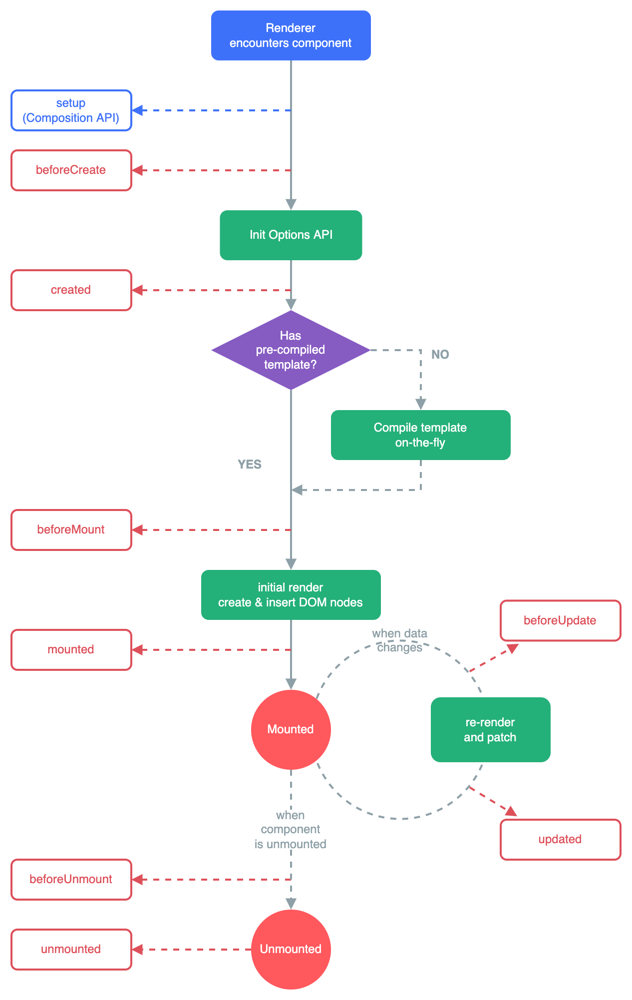

本文最后更新于：2023年10月15日 下午
npm init vue@latest
基础语法 创建一个应用实例 应用实例 每个 vue 应用都是通过 createAPP 函数创建一个新的应用实例：
1 2 3 4 5 import { createApp } from "vue" ;const app = createApp ({
需要给 createApp 的对象实际上是一个组件,每个运用都需要一个”根组件”
1 2 3 4 5 import { createApp } from "vue" ;import App from "./App.vue" ;const app = createApp (App );
挂载运用 应用实例必须在调用了 .mount() 方法后才会渲染出来。该方法接收一个“容器”参数，可以是一个实际的 DOM 元素或是一个 CSS 选择器字符串：
.mount() 方法应该始终在整个应用配置和资源注册完成后被调用。同时请注意，不同于其他资源注册方法，它的返回值是根组件实例而非应用实例。
多个运用实例 应用实例并不只限于一个。createApp API 允许你在同一个页面中创建多个共存的 Vue 应用，而且每个应用都拥有自己的用于配置和全局资源的作用域。
1 2 3 4 5 6 7 8 9 const app1 = createApp ({mount ("#container-1" );const app2 = createApp ({mount ("#container-2" );
模板语法 Vue 使用一种基于 HTML 的模板语法，使我们能够声明式地将其组件实例的数据绑定到呈现的 DOM 上。所有的 Vue 模板都是语法层面合法的 HTML，可以被符合规范的浏览器和 HTML 解析器解析。
文本插值 最基本的数据绑定形式是文本插值，它使用的是“Mustache”语法 (即双大括号)：
1 2 <span>Message: {{ msg }}</span>
1 export default { data(){ return { msg:"xxx", number:'10' } } }
双大括号中也可以使用 JS 逻辑运算(需要有返回值)
原始 template 双大括号会将数据解释为纯文本，而不是 HTML。若想插入 HTML，你需要使用 v-html 指令：
1 2 <p>Using text interpolation: {{ rawHtml }}</p>
Attribute(特性) 绑定 双大括号不能在 HTML attributes 中使用。想要响应式地绑定一个 attribute，应该使用 v-bind 指令：
1 <div v-bind:id="dynamicId"></div>
可以简写为:id
1 <div :id="dynamicId"></div>
布尔型 Attribute 布尔型 attribute 依据 true / false 值来决定 attribute 是否应该存在于该元素上。disabled 就是最常见的例子之一。
1 <button :disabled="isButtonDisabled">Button</button>
当 isButtonDisabled 为真值或一个空字符串 (即 <button disabled="">) 时，元素会包含这个 disabled attribute。而当其为其他假值时 attribute 将被忽略。
动态绑定多个值 如果你有像这样的一个包含多个 attribute 的 JavaScript 对象：
1 2 3 4 5 6 7 8 data (return {objectOfAttrs : {id : 'container' ,class : 'wrapper'
通过不带参数的 v-bind，你可以将它们绑定到单个元素上：
1 <div v-bind="objectOfAttrs"></div>
使用 JS 表达式 至此，我们仅在模板中绑定了一些简单的属性名。但是 Vue 实际上在所有的数据绑定中都支持完整的 JavaScript 表达式：
1 2 3 4 {{ number + 1 }} {{ ok ? 'YES' : 'NO' }} {{ message.split('').reverse().join('')
这些表达式都会被作为 JavaScript ，以当前组件实例为作用域解析执行。
在 Vue 模板内，JavaScript 表达式可以被使用在如下场景上：
在文本插值中 (双大括号)
在任何 Vue 指令 (以 v- 开头的特殊 attribute) attribute 的值中
每个绑定仅支持单一表达式，也就是一段能够被求值的 JavaScript 代码。
1 2 3 4 5 <!-- 这是一个语句，而非表达式 -->
调用函数 可以在绑定的表达式中使用一个组件暴露的方法：
1 2 3 <time :title="toTitleDate(date)" :datetime="date">
指令 指令是带有 v- 前缀的特殊 attribute。Vue 提供了许多内置指令，包括上我们所介绍的 v-bind 和 v-template。
1 <p v-if="seen">Now you see me</p>
这里，v-if 指令会基于表达式 seen 的值的真假来移除/插入该 <p> 元素。
1 <p v-show="seen">Now you see me</p>
参数 Argument 某些指令会需要一个“参数”，在指令名后通过一个冒号隔开做标识。例如用 v-bind 指令来响应式地更新一个 HTML attribute：
1 2 3 4 <a v-bind:href="url"> ... </a>
另一个例子是 v-on 指令，它将监听 DOM 事件：
1 2 3 4 <a v-on:click="doSomething"> ... </a>
动态参数 同样在指令参数上也可以使用一个 JavaScript 表达式，需要包含在一对方括号内：
1 2 3 4 5 6 7 8 <!--
这里的 attributeName 会作为一个 JavaScript 表达式被动态执行，计算得到的值会被用作最终的参数。举例来说，如果你的组件实例有一个数据属性 attributeName，其值为 “href”，那么这个绑定就等价于 v-bind:href。
相似地，你还可以将一个函数绑定到动态的事件名称上：
1 2 3 4 <a v-on:[eventName]="doSomething"> ... </a>
在此示例中，当 eventName 的值是 “focus” 时，v-on:[eventName] 就等价于 v-on:focus。
修饰符 修饰符是以点开头的特殊后缀，表明指令需要以一些特殊的方式被绑定。例如 .prevent 修饰符会告知 v-on 指令对触发的事件调用 event.preventDefault()：
1 <form @submit.prevent="onSubmit">...</form>
声明响应式状态 我们可以使用 reactive() 函数创建一个响应式对象或数组：
1 2 3 import { reactive } from "vue" ;const state = reactive ({ count : 0 });
响应式对象其实是 JavaScript Proxy，其行为表现与一般对象相似。不同之处在于 Vue 能够跟踪对响应式对象属性的访问与更改操作。
要在组件模板中使用响应式状态，需要在 setup() 函数中定义并返回。
1 2 3 4 5 6 7 8 9 10 11 12 13 import { reactive } from "vue" ;export default {setup (const state = reactive ({ count : 0 });return {
1 <div>{{ state.count }}</div>
自然，我们也可以在同一个作用域下定义更新响应式状态的函数，并将他们作为方法与状态一起暴露出去：
1 2 3 4 5 6 7 8 9 10 11 12 13 14 15 16 17 import { reactive } from "vue" ;export default {setup (const state = reactive ({ count : 0 });function increment (count ++;return {
<script setup>在 setup() 函数中手动暴露大量的状态和方法非常繁琐。幸运的是，我们可以通过使用构建工具来简化该操作。当使用单文件组件（SFC）时，我们可以使用 <script setup> 来大幅度地简化代码。
1 2 3 4 5 6 7 8 9 10 11 12 13 <script setup>
reactive()的局限性reactive() API 有两条限制：
仅对对象类型有效（对象、数组和 Map、Set 这样的集合类型），而对 string、number 和 boolean 这样的 原始类型 无效。
因为 Vue 的响应式系统是通过属性访问进行追踪的，因此我们必须始终保持对该响应式对象的相同引用。这意味着我们不可以随意地“替换”一个响应式对象，因为这将导致对初始引用的响应性连接丢失：
1 2 3 4 let state = reactive ({ count : 0 });reactive ({ count : 1 });
用ref()定义响应式遍变量 为此，Vue 提供了一个 ref() 方法来允许我们创建可以使用任何值类型的响应式 ref：
1 2 3 import { ref } from "vue" ;const count = ref (0 );
ref() 将传入参数的值包装为一个带 .value 属性的 ref 对象：
1 2 3 4 5 6 7 const count = ref (0 );console .log (count); console .log (count.value ); value ++;console .log (count.value );
简言之，ref() 让我们能创造一种对任意值的 “引用”，并能够在不丢失响应性的前提下传递这些引用。这个功能很重要，因为它经常用于将逻辑提取到 组合函数 中。
ref在模板中的解包当 ref 在模板中作为顶层属性被访问时，它们会被自动“解包”，所以不需要使用 .value。下面是之前的计数器例子，用 ref() 代替：
1 2 3 4 5 6 7 8 9 10 11 12 13 14 15 16 <script setup>
请注意，仅当 ref 是模板渲染上下文的顶层属性时才适用自动“解包”。
ref在响应式对象中的解包当一个 ref 被嵌套在一个响应式对象中，作为属性被访问或更改时，它会自动解包，因此会表现得和一般的属性一样：
1 2 3 4 5 6 7 8 9 10 11 12 13 14 15 16 const count = ref (0 );const state = reactive ({console .log (state.count ); count = 1 ;console .log (count.value ); const otherCount = ref (2 );count = otherCount;console .log (state.count ); console .log (count.value );
数组和集合类型的 ref 解包 跟响应式对象不同，当 ref 作为响应式数组或像 Map 这种原生集合类型的元素被访问时，不会进行解包。
1 2 3 4 5 6 7 const books = reactive ([ref ("Vue 3 Guide" )]);console .log (books[0 ].value );const map = reactive (new Map ([["count" , ref (0 )]]));console .log (map.get ("count" ).value );
计算属性 模板中的表达式虽然方便，但也只能用来做简单的操作。如果在模板中写太多逻辑，会让模板变得臃肿，难以维护。比如说，我们有这样一个包含嵌套数组的对象
1 2 3 4 5 6 7 8 const author = reactive ({name : "John Doe" ,books : ["Vue 2 - Advanced Guide" ,"Vue 3 - Basic Guide" ,"Vue 4 - The Mystery" ,
我们想根据 author 是否已有一些书籍来展示不同的信息：
1 2 <p>Has published books:</p>
这里的模板看起来有些复杂。我们必须认真看好一会儿才能明白它的计算依赖于 author.books。更重要的是，如果在模板中需要不止一次这样的计算，我们可不想将这样的代码在模板里重复好多遍。
因此我们推荐使用计算属性来描述依赖响应式状态的复杂逻辑。这是重构后的示例：
1 2 3 4 5 6 7 8 9 10 11 12 13 14 15 16 17 18 19 20 21 22 <script setup>
我们在这里定义了一个计算属性 publishedBooksMessage。computed() 方法期望接收一个 getter 函数，返回值为一个计算属性 ref。和其他一般的 ref 类似，你可以通过 publishedBooksMessage.value 访问计算结果。计算属性 ref 也会在模板中自动解包，因此在模板表达式中引用时无需添加 .value。
可写计算属性 计算属性默认是只读的。当你尝试修改一个计算属性时，你会收到一个运行时警告。只在某些特殊场景中你可能才需要用到“可写”的属性，你可以通过同时提供 getter 和 setter 来创建：
1 2 3 4 5 6 7 8 9 10 11 12 13 14 15 16 17 18 <script setup>
最佳实践 Getter 不应该有副作用 计算属性的 getter 应只做计算而没有任何其他的副作用，这一点非常重要，请务必牢记。举例来说，不要在 getter 中做异步请求或者更改 DOM！ 一个计算属性的声明中描述的是如何根据其他值派生一个值。因此 getter 的职责应该仅为计算和返回该值。在之后的指引中我们会讨论如何使用监听器根据其他响应式状态的变更来创建副作用。
避免直接修改计算属性值 从计算属性返回的值是派生状态。可以把它看作是一个“临时快照”，每当源状态发生变化时，就会创建一个新的快照。更改快照是没有意义的，因此计算属性的返回值应该被视为只读的，并且永远不应该被更改——应该更新它所依赖的源状态以触发新的计算。
Class 与 Style 绑定 数据绑定的一个常见需求场景是操纵元素的 CSS class 列表和内联样式。
绑定 HTML class 绑定对象 我们可以给 :class (v-bind:class 的缩写) 传递一个对象来动态切换 class
1 <div :class="{ active: isActive }"></div>
上面的语法表示 active 是否存在取决于数据属性 isActive 的真假值。
你可以在对象中写多个字段来操作多个 class。此外，:class 指令也可以和一般的 class attribute 共存。举例来说，下面这样的状态：
1 2 const isActive = ref (true );const hasError = ref (false );
配合以下模板：
1 2 3 4 <div
渲染的结果会是：
1 <div class="static active"></div>
绑定的对象并不一定需要写成内联字面量的形式，也可以直接绑定一个对象：
1 2 3 4 const classObject = reactive ({active : true ,"text-danger" : false ,
1 <div :class="classObject"></div>
我们也可以绑定一个返回对象的计算属性。这是一个常见且很有用的技巧：
1 2 3 4 5 6 7 const isActive = ref (true );const error = ref (null );const classObject = computed (() => ({active : isActive.value && !error.value ,"text-danger" : error.value && error.value .type === "fatal" ,
1 <div :class="classObject"></div>
绑定数组 我们可以给 :class 绑定一个数组来渲染多个 CSS class：
1 2 const activeClass = ref ("active" );const errorClass = ref ("text-danger" );
1 <div :class="[activeClass, errorClass]"></div>
渲染的结果是：
1 <div class="active text-danger"></div>
如果你也想在数组中有条件地渲染某个 class，你可以使用三元表达式：
1 <div :class="[isActive ? activeClass : '', errorClass]"></div>
然而，这可能在有多个依赖条件的 class 时会有些冗长。因此也可以在数组中嵌套对象：
1 <div :class="[{ active: isActive }, errorClass]"></div>
绑定内联样式 绑定对象 :style 支持绑定 JavaScript 对象值，对应的是 HTML 元素的 style 属性：
1 2 const activeColor = ref ("red" );const fontSize = ref (30 );
1 <div :style="{ color: activeColor, fontSize: fontSize + 'px' }"></div>
尽管推荐使用 camelCase，但 :style 也支持 kebab-cased 形式的 CSS 属性 key (对应其 CSS 中的实际名称)，例如：
1 <div :style="{ 'font-size': fontSize + 'px' }"></div>
直接绑定一个样式对象通常是一个好主意，这样可以使模板更加简洁：
1 2 3 4 const styleObject = reactive ({color : "red" ,fontSize : "13px" ,
1 <div :style="styleObject"></div>
同样的，如果样式对象需要更复杂的逻辑，也可以使用返回样式对象的计算属性。
绑定数组 我们还可以给 :style 绑定一个包含多个样式对象的数组。这些对象会被合并后渲染到同一元素上：
1 <div :style="[baseStyles, overridingStyles]"></div>
条件渲染 v-if v-if 指令用于条件性地渲染一块内容。这块内容只会在指令的表达式返回真值时才被渲染。
1 <h1 v-if="awesome">Vue is awesome!</h1>
v-else 你也可以使用 v-else 为 v-if 添加一个“else 区块”。
1 2 3 4 <button @click="awesome = !awesome">Toggle</button>
v-else-if 顾名思义，v-else-if 提供的是相应于 v-if 的“else if 区块”。它可以连续多次重复使用：
1 2 3 4 <div v-if="type === 'A'">A</div>
<template> 上的 v-if因为 v-if 是一个指令，他必须依附于某个元素。但如果我们想要切换不止一个元素呢？在这种情况下我们可以在一个 <template> 元素上使用 v-if，这只是一个不可见的包装器元素，最后渲染的结果并不会包含这个 <template> 元素。
1 2 3 4 5 <template v-if="ok">
v-else 和 v-else-if 也可以在 <template> 上使用。
v-show 另一个可以用来按条件显示一个元素的指令是 v-show。其用法基本一样：
1 <h1 v-show="ok">Hello!</h1>
不同之处在于 v-show 会在 DOM 渲染中保留该元素；v-show 仅切换了该元素上名为 display 的 CSS 属性。
v-show 不支持在 <template> 元素上使用，也不能和 v-else 搭配使用。
v-if vs v-showv-if 是“真实的”按条件渲染，因为它确保了在切换时，条件区块内的事件监听器和子组件都会被销毁与重建。
v-if 也是惰性的：如果在初次渲染时条件值为 false，则不会做任何事。条件区块只有当条件首次变为 true 时才被渲染。
相比之下，v-show 简单许多，元素无论初始条件如何，始终会被渲染，只有 CSS display 属性会被切换。
总的来说，v-if 有更高的切换开销，而 v-show 有更高的初始渲染开销。因此，如果需要频繁切换，则使用 v-show 较好；如果在运行时绑定条件很少改变，则 v-if 会更合适。
列表渲染 v-for 我们可以使用 v-for 指令基于一个数组来渲染一个列表。v-for 指令的值需要使用 item in items 形式的特殊语法，其中 items 是源数据的数组，而 item 是迭代项的别名：
1 const items = ref ([{ message : "Foo" }, { message : "Bar" }]);
1 <li v-for="item in items">{{ item.message }}</li>
在 v-for 块中可以完整地访问父作用域内的属性和变量。v-for 也支持使用可选的第二个参数表示当前项的位置索引。
1 2 const parentMessage = ref ("Parent" );const items = ref ([{ message : "Foo" }, { message : "Bar" }]);
1 2 3 <li v-for="(item, index) in items">
Parent-0-Foo
Parent-1-Bar
你也可以在定义 v-for 的变量别名时使用解构，和解构函数参数类似：
1 2 3 4 <li v-for="{ message } in items">{{ message }}</li>
对于多层嵌套的 v-for，作用域的工作方式和函数的作用域很类似。每个 v-for 作用域都可以访问到父级作用域：
1 2 3 4 5 <li v-for="item in items">
你也可以使用 of 作为分隔符来替代 in，这更接近 JavaScript 的迭代器语法：
1 <div v-for="item of items"></div>
v-for 与对象 你也可以使用 v-for 来遍历一个对象的所有属性。遍历的顺序会基于对该对象调用 Object.keys() 的返回值来决定。
1 2 3 4 5 const myObject = reactive ({title : "How to do lists in Vue" ,author : "Jane Doe" ,publishedAt : "2016-04-10" ,
1 2 3 <ul>
可以通过提供第二个参数表示属性名 (例如 key)：
1 <li v-for="(value, key) in myObject">{{ key }}: {{ value }}</li>
第三个参数表示位置索引：
1 2 3 <li v-for="(value, key, index) in myObject">
在 v-for 里使用范围值 v-for 可以直接接受一个整数值。在这种用例中，会将该模板基于 1…n 的取值范围重复多次。
1 <span v-for="n in 10">{{ n }}</span>
注意此处 n 的初值是从 1 开始而非 0
<template> 上的 v-for与模板上的 v-if 类似，你也可以在 <template> 标签上使用 v-for 来渲染一个包含多个元素的块。例如：
1 2 3 4 5 6 <ul>
v-if 和 v-for 当它们同时存在于一个节点上时，v-if 比 v-for 的优先级更高。这意味着 v-if 的条件将无法访问到 v-for 作用域内定义的变量别名：
1 2 3 4 5 <!--
在外新包装一层 <template> 再在其上使用 v-for 可以解决这个问题 (这也更加明显易读)：
1 2 3 <template v-for="todo in todos">
通过 key 管理状态 Vue 默认按照“就地更新”的策略来更新通过 v-for 渲染的元素列表。当数据项的顺序改变时，Vue 不会随之移动 DOM 元素的顺序，而是就地更新每个元素，确保它们在原本指定的索引位置上渲染。
默认模式是高效的，但只适用于列表渲染输出的结果不依赖子组件状态或者临时 DOM 状态 (例如表单输入值) 的情况。
为了给 Vue 一个提示，以便它可以跟踪每个节点的标识，从而重用和重新排序现有的元素，你需要为每个元素对应的块提供一个唯一的 key attribute：
1 2 3 <div v-for="item in items" :key="item.id">
当你使用 <template v-for> 时，key 应该被放置在这个 <template> 容器上：
1 2 3 <template v-for="todo in todos" :key="todo.name">
推荐在任何可行的时候为 v-for 提供一个 key attribute，除非所迭代的 DOM 内容非常简单 (例如：不包含组件或有状态的 DOM 元素)，或者你想有意采用默认行为来提高性能。
数组变化预测 变更方法 Vue 能够侦听响应式数组的变更方法，并在它们被调用时触发相关的更新。这些变更方法包括：
push()
pop()
shift()
unshift()
splice()
sort()
reverse()
替换一个数组 变更方法，顾名思义，就是会对调用它们的原数组进行变更。相对地，也有一些不可变 (immutable) 方法，例如 filter()，concat() 和 slice()，这些都不会更改原数组，而总是返回一个新数组。当遇到的是非变更方法时，我们需要将旧的数组替换为新的：
1 2 value = items.value .filter ((item ) => item.message .match (/Foo/ ));
你可能认为这将导致 Vue 丢弃现有的 DOM 并重新渲染整个列表——幸运的是，情况并非如此。Vue 实现了一些巧妙的方法来最大化对 DOM 元素的重用，因此用另一个包含部分重叠对象的数组来做替换，仍会是一种非常高效的操作。
展示过滤或排序后的结果 有时，我们希望显示数组经过过滤或排序后的内容，而不实际变更或重置原始数据。在这种情况下，你可以创建返回已过滤或已排序数组的计算属性(使用 filter )。
1 2 - return numbers.reverse() + return [...numbers].reverse()
事件处理 监听事件 我们可以使用 v-on 指令 (简写为 @) 来监听 DOM 事件，并在事件触发时执行对应的 JavaScript。用法：v-on:click="handler" 或 @click="handler"。
内联事件处理器： 事件被触发时执行的内联 JavaScript 语句 (与 onclick 类似)。方法事件处理器： 一个指向组件上定义的方法的属性名或是路径。
内联事件处理器 内联事件处理器通常用于简单场景，例如：
1 2 <button @click="count++">Add 1</button>
方法事件处理器 随着事件处理器的逻辑变得愈发复杂，内联代码方式变得不够灵活。因此 v-on 也可以接受一个方法名或对某个方法的调用。
举例来说：
1 2 3 4 5 6 7 8 9 const name = ref ("Vue.js" );function greet (event ) {alert (`Hello ${name.value} !` );if (event) {alert (event.target .tagName );
1 2 <!-- `greet` 是上面定义过的方法名 -->
方法事件处理器会自动接收原生 DOM 事件并触发执行。在上面的例子中，我们能够通过被触发事件的 event.target.tagName 访问到该 DOM 元素。
方法与内联事件判断 模板编译器会通过检查 v-on 的值是否是合法的 JavaScript 标识符或属性访问路径来断定是何种形式的事件处理器。举例来说，foo、foo.bar 和 foo[‘bar’] 会被视为方法事件处理器，而 foo() 和 count++ 会被视为内联事件处理器。
在内联处理器中调用方法 除了直接绑定方法名，你还可以在内联事件处理器中调用方法。这允许我们向方法传入自定义参数以代替原生事件：
1 2 3 function say (message ) {alert (message);
1 2 <button @click="say('hello')">Say hello</button>
在内联事件处理器中访问事件参数 有时我们需要在内联事件处理器中访问原生 DOM 事件。你可以向该处理器方法传入一个特殊的 $event 变量，或者使用内联箭头函数：
1 2 3 4 5 6 7 <!-- 使用特殊的 $event 变量 -->
1 2 3 4 5 6 7 function warn (message, event ) {if (event) {preventDefault ();alert (message);
事件修饰符 在处理事件时调用 event.preventDefault() 或 event.stopPropagation() 是很常见的。尽管我们可以直接在方法内调用，但如果方法能更专注于数据逻辑而不用去处理 DOM 事件的细节会更好。
为解决这一问题，Vue 为 v-on 提供了事件修饰符。修饰符是用 . 表示的指令后缀，包含以下这些：
.stop
.prevent
.self
.capture
.once
.passive
1 2 3 4 5 6 7 8 9 10 11 12 13 14 15 <!-- 单击事件将停止传递 -->
使用修饰符时需要注意调用顺序，因为相关代码是以相同的顺序生成的。因此使用 @click.prevent.self 会阻止元素及其子元素的所有点击事件的默认行为，而 @click.self.prevent 则只会阻止对元素本身的点击事件的默认行为。
.capture、.once 和 .passive 修饰符与原生 addEventListener 事件相对应
1 2 3 4 5 6 7 8 9 10 <!-- 添加事件监听器时，使用 `capture` 捕获模式 -->
.passive 修饰符一般用于触摸事件的监听器，可以用来改善移动端设备的滚屏性能。
按键修饰符 在监听键盘事件时，我们经常需要检查特定的按键。Vue 允许在 v-on 或 @ 监听按键事件时添加按键修饰符。
1 2 <!-- 仅在 `key` 为 `Enter` 时调用 `submit` -->
你可以直接使用 KeyboardEvent.key 暴露的按键名称作为修饰符，但需要转为 kebab-case 形式。
1 2 <!-- 仅在 `key` 为 `Enter` 时调用 `submit` -->
按键别名 Vue 为一些常用的按键提供了别名：
.enter
.tab
.delete (捕获“Delete”和“Backspace”两个按键)
.esc
.space
.up
.down
.left
.right
系统按键修饰符 你可以使用以下系统按键修饰符来触发鼠标或键盘事件监听器，只有当按键被按下时才会触发。
举例来说：
1 2 3 4 5 <!-- Alt + Enter -->
.exact 修饰符 .exact 修饰符允许控制触发一个事件所需的确定组合的系统按键修饰符。
1 2 3 4 5 6 7 8 <!-- 当按下 Ctrl 时，即使同时按下 Alt 或 Shift 也会触发 -->
鼠标按键修饰符
这些修饰符将处理程序限定为由特定鼠标按键触发的事件。
表单输入输出 在前端处理表单时，我们常常需要将表单输入框的内容同步给 JavaScript 中相应的变量。
1 <input :value="text" @input="event => text = event.target.value" />
v-model 指令帮我们简化了这一步骤：
1 <input v-model="text" />
另外，v-model 还可以用于各种不同类型的输入，<textarea>、<select> 元素。它会根据所使用的元素自动使用对应的 DOM 属性和事件组合：
文本类型的 <input> 和 <textarea> 元素会绑定 value property 并侦听 input 事件；
<input type="checkbox"> 和 <input type="radio"> 会绑定 checked property 并侦听 change 事件；<select> 会绑定 value property 并侦听 change 事件。
基本用法 文本 1 2 <p>Message is: {{ message }}</p>
多行文本 1 2 3 <span>Multiline message is:</span>
注意在 <textarea> 中是不支持插值表达式的。请使用 v-model 来替代：
1 2 3 4 5 <!-- 错误 -->
复选框 单一的复选框，绑定布尔类型值：
1 2 <input type="checkbox" id="checkbox" v-model="checked" />
我们也可以将多个复选框绑定到同一个数组或集合的值：
1 const checkedNames = ref ([]);
1 2 3 4 5 6 7 8 9 10 <div>Checked names: {{ checkedNames }}</div>
在这个例子中，checkedNames 数组将始终包含所有当前被选中的框的值。
单选按钮 1 2 3 4 5 6 7 <div>Picked: {{ picked }}</div>
选择器 单个选择器的示例如下：
1 2 3 4 5 6 7 8 <div>Selected: {{ selected }}</div>
多选 (值绑定到一个数组)：
1 2 3 4 5 6 7 <div>Selected: {{ selected }}</div>
选择器的选项可以使用 v-for 动态渲染：
1 2 3 4 5 6 7 const selected = ref ('A' )const options = ref ([text : 'One' , value : 'A' },text : 'Two' , value : 'B' },text : 'Three' , value : 'C' }`` `
1 2 3 4 5 6 7 <select v-model="selected">
值绑定 对于单选按钮，复选框和选择器选项，v-model 绑定的值通常是静态的字符串 (或者对复选框是布尔值)：
1 2 3 4 5 6 7 8 9 10 <!-- `picked` 在被选择时是字符串 "a" -->
但有时我们可能希望将该值绑定到当前组件实例上的动态数据。这可以通过使用 v-bind 来实现。此外，使用 v-bind 还使我们可以将选项值绑定为非字符串的数据类型。
复选框 1 <input type="checkbox" v-model="toggle" true-value="yes" false-value="no" />
true-value 和 false-value 是 Vue 特有的 attributes，仅支持和 v-model 配套使用。这里 toggle 属性的值会在选中时被设为 ‘yes’，取消选择时设为 ‘no’。你同样可以通过 v-bind 将其绑定为其他动态值：
1 2 3 4 5 6 <input
单选框 1 2 <input type="radio" v-model="pick" :value="first" />
pick 会在第一个按钮选中时被设为 first，在第二个按钮选中时被设为 second。
选择器选项 1 2 3 4 <select v-model="selected">
v-model 同样也支持非字符串类型的值绑定！在上面这个例子中，当某个选项被选中，selected 会被设为该对象字面量值 { number: 123 }。
修饰符 .lazy 默认情况下，v-model 会在每次 input 事件后更新数据 (IME 拼字阶段的状态例外)。你可以添加 lazy 修饰符来改为在每次 change 事件后更新数据：
1 2 <!-- 在 "change" 事件后同步更新而不是 "input" -->
.number 如果你想让用户输入自动转换为数字，你可以在 v-model 后添加 .number 修饰符来管理输入：
1 <input v-model.number="age" />
如果该值无法被 parseFloat() 处理，那么将返回原始值。
number 修饰符会在输入框有 type=”number” 时自动启用。
.trim 如果你想要默认自动去除用户输入内容中两端的空格，你可以在 v-model 后添加 .trim 修饰符：
1 <input v-model.trim="msg" />
生命周期钩子 每个 Vue 组件实例在创建时都需要经历一系列的初始化步骤，比如设置好数据侦听，编译模板，挂载实例到 DOM，以及在数据改变时更新 DOM。在此过程中，它也会运行被称为生命周期钩子的函数，让开发者有机会在特定阶段运行自己的代码。
注册周期钩子 举例来说，onMounted 钩子可以用来在组件完成初始渲染并创建 DOM 节点后运行代码：
1 2 3 4 5 6 7 <script setup>
当调用 onMounted 时，Vue 会自动将回调函数注册到当前正被初始化的组件实例上。这意味着这些钩子应当在组件初始化时被同步注册。例如，请不要这样做：
1 2 3 4 5 6 setTimeout (() => {onMounted (() => {100 );
注意这并不意味着对 onMounted 的调用必须放在 setup() 或 <script setup> 内的词法上下文中。onMounted() 也可以在一个外部函数中调用，只要调用栈是同步的，且最终起源自 setup() 就可以。
生命周期图示 
想了解更多生命周期钩子 api 的用法，请参考生命周期钩子 API 索引
监听器 基本示例 在组合式 API 中，我们可以使用 watch 函数在每次响应式状态发生变化时触发回调函数：
1 2 3 4 5 6 7 8 9 10 11 12 13 14 15 16 17 18 19 20 21 22 23 24 25 26 27 <script setup>
现在可能还看不懂这些代码，先往下读
侦听数据源类型 watch 的第一个参数可以是不同形式的“数据源”：它可以是一个 ref (包括计算属性)、一个响应式对象、一个 getter 函数、或多个数据源组成的数组：
1 2 3 4 5 6 7 8 9 10 11 12 13 14 15 16 17 18 19 20 const x = ref (0 );const y = ref (0 );watch (x, (newX ) => {console .log (`x is ${newX} ` );watch (() => x.value + y.value ,(sum ) => {console .log (`sum of x + y is: ${sum} ` );watch ([x, () => y.value ], ([newX, newY] ) => {console .log (`x is ${newX} and y is ${newY} ` );
注意，你不能直接侦听响应式对象的属性值，例如:
1 2 3 4 5 6 const obj = reactive ({ count : 0 });watch (obj.count , (count ) => {console .log (`count is: ${count} ` );
这里需要用一个返回该属性的 getter 函数：
1 2 3 4 5 6 7 watch (() => obj.count ,(count ) => {console .log (`count is: ${count} ` );
深层监听器 直接给 watch() 传入一个响应式对象，会隐式地创建一个深层侦听器——该回调函数在所有嵌套的变更时都会被触发：
1 2 3 4 5 6 7 8 9 const obj = reactive ({ count : 0 });watch (obj, (newValue, oldValue ) => {count ++;
相比之下，一个返回响应式对象的 getter 函数，只有在返回不同的对象时，才会触发回调：
1 2 3 4 5 6 watch (() => state.someObject ,() => {
你也可以给上面这个例子显式地加上 deep 选项，强制转成深层侦听器：
1 2 3 4 5 6 7 8 watch (() => state.someObject ,(newValue, oldValue ) => {deep : true }
深度侦听需要遍历被侦听对象中的所有嵌套的属性，当用于大型数据结构时，开销很大。因此请只在必要时才使用它，并且要留意性能。
即时回调的监听器 有的时候我们需要先请求一些数据，然后再进行监听watch 默认是懒执行的
1 2 3 4 5 6 7 watch ((newValue, oldValue ) => {immediate : true }
watchEffect() 侦听器的回调使用与源完全相同的响应式状态是很常见的。例如下面的代码，在每当 todoId 的引用发生变化时使用侦听器来加载一个远程资源：
1 2 3 4 5 6 7 8 9 10 11 12 13 const todoId = ref (1 );const data = ref (null );watch (async () => {const response = await fetch (`https://jsonplaceholder.typicode.com/todos/${todoId.value} ` value = await response.json ();immediate : true }
我们可以用 watchEffect 函数 来简化上面的代码。watchEffect() 允许我们自动跟踪回调的响应式依赖。上面的侦听器可以重写为：
1 2 3 4 5 6 watchEffect (async () => {const response = await fetch (`https://jsonplaceholder.typicode.com/todos/${todoId.value} ` value = await response.json ();
这个例子中，回调会立即执行，不需要指定 immediate: true。在执行期间，它会自动追踪 todoId.value 作为依赖（和计算属性类似）。每当 todoId.value 变化时，回调会再次执行。有了 watchEffect()，我们不再需要明确传递 todoId 作为源值。
watchEffect 仅会在其同步执行期间，才追踪依赖。在使用异步回调时，只有在第一个 await 正常工作前访问到的属性才会被追踪。
watch vs. watchEffect watch 和 watchEffect 都能响应式地执行有副作用的回调。它们之间的主要区别是追踪响应式依赖的方式：
回调的触发时机 默认情况下，用户创建的侦听器回调，都会在 Vue 组件更新之前被调用。这意味着你在侦听器回调中访问的 DOM 将是被 Vue 更新之前的状态。
如果想在侦听器回调中能访问被 Vue 更新之后的 DOM，你需要指明 flush: ‘post’ 选项：
1 2 3 4 5 6 7 watch (source, callback, {flush : "post" ,watchEffect (callback, {flush : "post" ,
后置刷新的 watchEffect() 有个更方便的别名 watchPostEffect()：
1 2 3 4 5 import { watchPostEffect } from "vue" ;watchPostEffect (() => {
异步监听器 注意，需要异步创建侦听器的情况很少，请尽可能选择同步创建。如果需要等待一些异步数据，你可以使用条件式的侦听逻辑：
1 2 3 4 5 6 7 8 const data = ref (null );watchEffect (() => {if (data.value ) {
模板引用 虽然 Vue 的声明性渲染模型为你抽象了大部分对 DOM 的直接操作，但在某些情况下，我们仍然需要直接访问底层 DOM 元素。要实现这一点，我们可以使用特殊的 ref attribute：
访问模板引用 为了通过组合式 API 获得该模板引用，我们需要声明一个同名的 ref：
1 2 3 4 5 6 7 8 9 10 11 12 13 14 15 <script setup>
如果不使用 <script setup>，需确保从 setup() 返回 ref：
1 2 3 4 5 6 7 8 9 export default {setup (const input = ref (null );return {
注意，你只可以在组件挂载后才能访问模板引用。如果你想在模板中的表达式上访问 input，在初次渲染时会是 null。这是因为在初次渲染前这个元素还不存在呢！
v-for 中的模板引用 当在 v-for 中使用模板引用时，对应的 ref 中包含的值是一个数组，它将在元素被挂载后包含对应整个列表的所有元素：
1 2 3 4 5 6 7 8 9 10 11 12 13 14 15 16 17 18 19 <script setup>
注意：ref 数组并不保证与源数组相同的顺序。
函数模板引用 除了使用字符串值作名字，ref attribute 还可以绑定为一个函数，会在每次组件更新时都被调用。该函数会收到元素引用作为其第一个参数：
1 <input :ref="(el) => { /* 将 el 赋值给一个数据属性或 ref 变量 */ }" />
注意我们这里需要使用动态的 :ref 绑定才能够传入一个函数。当绑定的元素被卸载时，函数也会被调用一次，此时的 el 参数会是 null。你当然也可以绑定一个组件方法而不是内联函数。
路由 Vue 路由其实和 React 差不多，也是监听 url 然后通过路由表来切换渲染组件本文参考文档
基本操作 1 2 3 4 5 6 7 8 9 10 11 12 13 14 15 16 <script src ="https://unpkg.com/vue@3" > </script > <script src ="https://unpkg.com/vue-router@4" > </script > <div id ="app" > <h1 > Hello App!</h1 > <p > <router-link to ="/" > Go to Home</router-link > <router-link to ="/about" > Go to About</router-link > </p > <router-view > </router-view > </div >
router-link类似于<Link>组件router-view类似于<Outlet>组件
1 2 3 4 5 6 7 8 9 10 11 12 13 14 15 16 17 18 19 20 21 22 23 24 25 26 27 28 29 30 31 32 const Home = { template : "<div>Home</div>" };const About = { template : "<div>About</div>" };const routes = [path : "/" , component : Home },path : "/about" , component : About },const router = VueRouter .createRouter ({history : VueRouter .createWebHashHistory (),const app = Vue .createApp ({});use (router);mount ("#app" );
通过调用 app.use(router)，我们会触发第一次导航且可以在任意组件中以 this.$router 的形式访问它，并且以 this.$route 的形式访问当前路由：
1 2 3 4 5 6 7 8 9 10 11 12 13 14 15 16 17 18 export default {computed : {username (return this .$route .params .username ;methods : {goToDashboard (if (isAuthenticated) {this .$router .push ("/dashboard" );else {this .$router .push ("/login" );
嵌套路由 和 react 写法差不多
1 2 3 4 5 6 7 8 9 10 11 12 13 14 15 16 17 18 19 20 const routes = [path : "/user/:id" ,component : User ,children : [path : "profile" ,component : UserProfile ,path : "posts" ,component : UserPosts ,
编程式导航 导航到不同的位置 注意：在 Vue 实例中，你可以通过 $router 访问路由实例。因此你可以调用 this.$router.push。
想要导航到不同的 URL，可以使用 router.push 方法。这个方法会向 history 栈添加一个新的记录，所以，当用户点击浏览器后退按钮时，会回到之前的 URL。
当你点击 <router-link> 时，内部会调用这个方法，所以点击 <router-link :to="..."> 相当于调用 router.push(…) ：
1 2 3 4 5 6 7 8 9 10 11 12 13 14 push ("/users/eduardo" );push ({ path : "/users/eduardo" });push ({ name : "user" , params : { username : "eduardo" } });push ({ path : "/register" , query : { plan : "private" } });push ({ path : "/about" , hash : "#team" });
替换当前位置 router.replace()
横跨历史 该方法采用一个整数作为参数，表示在历史堆栈中前进或后退多少步，类似于 window.history.go(n)。
1 2 3 4 5 6 7 8 9 10 11 12 go (1 );go (-1 );go (3 );go (-100 );go (100 );
命名路由 除了 path 之外，你还可以为任何路由提供 name。这有以下优点：
没有硬编码的 URL
params 的自动编码/解码。
防止你在 url 中出现打字错误。
绕过路径排序（如显示一个）
要链接到一个命名的路由，可以向 router-link 组件的 to 属性传递一个对象：
1 2 3 <router-link :to ="{ name: 'user', params: { username: 'erina' }}" > </router-link >
命名视图 有时候想同时 (同级) 展示多个视图，而不是嵌套展示，例如创建一个布局，有 sidebar (侧导航) 和 main (主内容) 两个视图，这个时候命名视图就派上用场了。你可以在界面中拥有多个单独命名的视图，而不是只有一个单独的出口。如果 router-view 没有设置名字，那么默认为 default。
1 2 3 <router-view class ="view left-sidebar" name ="LeftSidebar" > </router-view > <router-view class ="view main-content" > </router-view > <router-view class ="view right-sidebar" name ="RightSidebar" > </router-view >
一个视图使用一个组件渲染，因此对于同个路由，多个视图就需要多个组件。确保正确使用 components 配置 (带上 s)：
1 2 3 4 5 6 7 8 9 10 11 12 13 14 15 const router = createRouter ({history : createWebHashHistory (),routes : [path : "/" ,components : {default : Home ,LeftSidebar ,RightSidebar ,
嵌套命名视图 1 2 3 4 5 6 7 8 9 10 11 12 13 14 15 {path : '/settings' ,component : UserSettings ,children : [{path : 'emails' ,component : UserEmailsSubscriptions path : 'profile' ,components : {default : UserProfile ,helper : UserProfilePreview
重定向 重定向也是通过 routes 配置来完成，下面例子是从 /home 重定向到 /：
1 const routes = [{ path : "/home" , redirect : "/" }];
重定向的目标也可以是一个命名的路由：
1 const routes = [{ path : "/home" , redirect : { name : "homepage" } }];
甚至是一个方法，动态返回重定向目标：
1 2 3 4 5 6 7 8 9 10 11 12 13 14 15 const routes = [path : "/search/:searchText" ,redirect : (to ) => {return { path : "/search" , query : { q : to.params .searchText } };path : "/search" ,
请注意，导航守卫并没有应用在跳转路由上，而仅仅应用在其目标上。在上面的例子中，在 /home 路由中添加 beforeEnter 守卫不会有任何效果。
在写 redirect 的时候，可以省略 component 配置，因为它从来没有被直接访问过，所以没有组件要渲染。唯一的例外是嵌套路由：如果一个路由记录有 children 和 redirect 属性，它也应该有 component 属性。
路由组件传参 在你的组件中使用 $route 会与路由紧密耦合，这限制了组件的灵活性，因为它只能用于特定的 URL。虽然这不一定是件坏事，但我们可以通过 props 配置来解除这种行为：
1 2 3 4 5 6 const User = {props : ["id" ],template : "<div>User {{ id }}</div>" ,const routes = [{ path : "/user/:id" , component : User , props : true }];
这样的代码允许你在任何地方使用该组件，使得该组件更容易重用和测试。
对于有命名视图的路由，你必须为每个命名视图定义 props 配置：
1 2 3 4 5 6 7 const routes = [path : "/user/:id" ,components : { default : User , sidebar : Sidebar },props : { default : true , sidebar : false },
你可以创建一个返回 props 的函数。这允许你将参数转换为其他类型，将静态值与基于路由的值相结合等等。
1 2 3 4 5 6 7 const routes = [path : "/search" ,component : SearchUser ,props : (route ) => ({ query : route.query .q }),
不同的历史模式 在创建路由器实例时，history 配置允许我们在不同的历史模式中进行选择。
Hash 模式 hash 模式是用 createWebHashHistory() 创建的：
1 2 3 4 5 6 7 8 import { createRouter, createWebHashHistory } from "vue-router" ;const router = createRouter ({history : createWebHashHistory (),routes : [
它在内部传递的实际 URL 之前使用了一个哈希字符（#）。由于这部分 URL 从未被发送到服务器，所以它不需要在服务器层面上进行任何特殊处理。不过，它在 SEO 中确实有不好的影响。如果你担心这个问题，可以使用 HTML5 模式。
HTML5 模式 用 createWebHistory() 创建 HTML5 模式，推荐使用这个模式：
1 2 3 4 5 6 7 8 import { createRouter, createWebHistory } from "vue-router" ;const router = createRouter ({history : createWebHistory (),routes : [
当使用这种历史模式时，URL 会看起来很 “正常”，例如 https://example.com/user/id。漂亮 !
不过，问题来了。由于我们的应用是一个单页的客户端应用，如果没有适当的服务器配置，用户在浏览器中直接访问 https://example.com/user/id，就会得到一个 404 错误。这就尴尬了。
不用担心：要解决这个问题，你需要做的就是在你的服务器上添加一个简单的回退路由。如果 URL 不匹配任何静态资源，它应提供与你的应用程序中的 index.html 相同的页面。漂亮依旧!服务器配置示例
更多高阶内容，请查阅官方文档
Vue 组件 组件基础 与 React 相同，Vue 也是由一个个组件构成一个大的项目，但是与 React 又有些许不同
组件的注册 一个 Vue 组件在使用前需要先被“注册”，这样 Vue 才能在渲染模板时找到其对应的实现。组件注册有两种方式：全局注册和局部注册。
全局注册 我们可以使用 Vue 应用实例的 app.component() 方法，让组件在当前 Vue 应用中全局可用。
1 2 3 4 5 6 7 8 9 10 11 12 import { createApp } from "vue" ;const app = createApp ({});component ("MyComponent" ,
如果使用单文件组件，你可以注册被导入的 .vue 文件：
1 2 3 import MyComponent from "./App.vue" ;component ("MyComponent" , MyComponent );
全局注册的组件可以在此应用的任意组件的模板中使用：
1 2 3 4 <!-- 这在当前应用的任意组件中都可用 -->
所有的子组件也可以使用全局注册的组件，这意味着这三个组件也都可以在彼此内部使用。
局部注册 全局注册虽然很方便，但有以下几个问题：
相比之下，局部注册的组件需要在使用它的父组件中显式导入，并且只能在该父组件中使用。它的优点是使组件之间的依赖关系更加明确，并且对 tree-shaking 更加友好。<script setup> 的单文件组件中，导入的组件可以直接在模板中使用，无需注册：
1 2 3 4 5 6 7 <script setup>
如果没有使用 <script setup>，则需要使用 components 选项来显式注册：
1 2 3 4 5 6 7 8 9 10 import ComponentA from "./ComponentA.js" ;export default {components : {ComponentA , setup (
请注意：局部注册的组件在后代组件中并不可用 。在这个例子中，ComponentA 注册后仅在当前组件可用，而在任何的子组件或更深层的子组件中都不可用。
组件名 采用首字母大写的驼峰式命名，如 PascalCase，MyComponent 等等
Props Props 声明 一个组件需要显式声明它所接受的 props。<script setup> 的单文件组件中，props 可以使用 defineProps() 宏来声明：
1 2 3 4 5 <script setup>
在没有使用 <script setup> 的组件中，prop 可以使用 props 选项来声明：
1 2 3 4 5 6 7 export default {props : ["foo" ],setup (props ) {console .log (props.foo );
除了使用字符串数组来声明 prop 外，还可以使用对象的形式：
1 2 3 4 5 defineProps ({title : String ,likes : Number ,
1 2 3 4 5 6 7 export default {props : {title : String ,likes : Number ,
对于以对象形式声明中的每个属性，key 是 prop 的名称，而值则是该 prop 预期类型的构造函数。比如，如果要求一个 prop 的值是 number 类型，则可使用 Number 构造函数作为其声明的值。
传递 props 的细节 Prop 名字格式 如果一个 prop 的名字很长，应使用 camelCase 形式，因为它们是合法的 JavaScript 标识符，可以直接在模板的表达式中使用，也可以避免在作为属性 key 名时必须加上引号。
1 2 3 defineProps ({greetingMessage : String ,
1 <span>{{ greetingMessage }}</span>
虽然理论上你也可以在向子组件传递 props 时使用 camelCase 形式 (使用 DOM 模板时例外)，但实际上为了和 HTML attribute 对齐，我们通常会将其写为 kebab-case 形式：
1 <MyComponent greeting-message="hello" />
对于组件名我们推荐使用 PascalCase，因为这提高了模板的可读性，能帮助我们区分 Vue 组件和原生 HTML 元素。然而对于传递 props 来说，使用 camelCase 并没有太多优势，因此我们推荐更贴近 HTML 的书写风格。
静态 vs. 动态 Prop 至此，你已经见过了很多像这样的静态值形式的 props：
1 <BlogPost title="My journey with Vue" />
相应地，还有使用 v-bind 或缩写 : 来进行动态绑定的 props：
1 2 3 4 5 <!-- 根据一个变量的值动态传入 -->
传递不同值的类型 在上述的两个例子中，我们只传入了字符串值，但实际上任何类型的值都可以作为 props 的值被传递。
使用一个对象绑定多个 prop 如果你想要将一个对象的所有属性都当作 props 传入，你可以使用没有参数的 v-bind，即只使用 v-bind 而非 :prop-name。例如，这里有一个 post 对象：
1 2 3 4 const post = {id : 1 ,title : "My Journey with Vue" ,
以及下面的模板：
1 2 3 4 <BlogPost v-bind="post" />
单向数据流 所有的 props 都遵循着单向绑定原则，props 因父组件的更新而变化，自然地将新的状态向下流往子组件，而不会逆向传递。这避免了子组件意外修改父组件的状态的情况，不然应用的数据流将很容易变得混乱而难以理解。
导致你想要更改一个 prop 的需求通常来源于以下两种场景：
prop 被用于传入初始值；而子组件想在之后将其作为一个局部数据属性 在这种情况下，最好是新定义一个局部数据属性，从 props 上获取初始值即可：
1 2 3 4 5 const props = defineProps (["initialCounter" ]);const counter = ref (props.initialCounter );
需要对传入的 prop 值做进一步的转换。 在这种情况中，最好是基于该 prop 值定义一个计算属性：
1 2 3 4 const props = defineProps (["size" ]);const normalizedSize = computed (() => props.size .trim ().toLowerCase ());
Boolean 类型转换 为了更贴近原生 boolean attributes 的行为，声明为 Boolean 类型的 props 有特别的类型转换规则。以带有如下声明的 <MyComponent> 组件为例：
1 2 3 defineProps ({disabled : Boolean ,
该组件可以被这样使用：
1 2 3 4 5 <!-- 等同于传入 :disabled="true" -->
当一个 prop 被声明为允许多种类型时，例如：
1 2 3 defineProps ({disabled : [Boolean , Number ],
无论声明类型的顺序如何，Boolean 类型的特殊转换规则都会被应用。
监听事件 有的时候我们的子组件需要和父组件进行交互,可以通过事件来进行交互
触发与监听事件 父组件通过v-on或者@来选择性地监听子组件上抛的事件，就像监听原生 DOM 事件一样
1 2 3 4 <BlogPost
子组件可以通过调用内置的 $emit 方法，通过传入事件名称来抛出一个事件：
1 2 3 4 5 6 7 <!-- BlogPost.vue, 省略了 <script> -->
事件参数 有时候我们会需要在触发事件时附带一个特定的值。举例来说，我们想要 <BlogPost> 组件来管理文本会缩放得多大。在这个场景下，我们可以给 $emit 提供一个额外的参数：
1 2 3 <button @click="$emit('increaseBy', 1)">
然后我们在父组件中监听事件，我们可以先简单写一个内联的箭头函数作为监听器，此函数会接收到事件附带的参数：
1 <MyButton @increase-by="(n) => count += n" />
或者，也可以用一个组件方法来作为事件处理函数：
1 <MyButton @increase-by="increaseCount" />
该方法也会接收到事件所传递的参数：
1 2 3 function increaseCount (n ) {value += n;
声明触发的事件 我们可以通过 defineEmits 宏来声明需要抛出的事件：
1 2 3 4 5 <!-- BlogPost.vue -->
这声明了一个组件可能触发的所有事件，还可以对事件的参数进行验证。同时，这还可以让 Vue 避免将它们作为原生事件监听器隐式地应用于子组件的根元素。
和 defineProps 类似，defineEmits 仅可用于 <script setup> 之中，并且不需要导入，它返回一个等同于 $emit 方法的 emit 函数。它可以被用于在组件的 <script setup> 中抛出事件，因为此处无法直接访问 $emit：
1 2 3 4 5 <script setup>
如果你没有在使用 <script setup>，你可以通过 emits 选项定义组件会抛出的事件。你可以从 setup() 函数的第二个参数，即 setup 上下文对象上访问到 emit 函数：
1 2 3 4 5 6 export default {emits : ["inFocus" , "submit" ],setup (props, ctx ) {emit ("submit" );
与 setup() 上下文对象中的其他属性一样，emit 可以安全地被解构：
1 2 3 4 5 6 export default {emits : ["inFocus" , "submit" ],setup (props, { emit } ) {emit ("submit" );
事件检验 和对 props 添加类型校验的方式类似，所有触发的事件也可以使用对象形式来描述。
要为事件添加校验，那么事件可以被赋值为一个函数，接受的参数就是抛出事件时传入 emit 的内容，返回一个布尔值来表明事件是否合法。
1 2 3 4 5 6 7 8 9 10 11 12 13 14 15 16 17 18 19 20 <script setup>
组件中的 v-model v-model 组件也可以使用在组件上
当使用在一个组件上时，v-model 会被展开为如下的形式：
1 2 3 4 <CustomInput
要让这个例子实际工作起来，<CustomInput> 组件内部需要做两件事：
将内部原生 <input> 元素的 value attribute 绑定到 modelValue prop
当原生的 input 事件触发时，触发一个携带了新值的 update:modelValue 自定义事件
这里是相应的代码:
1 2 3 4 5 6 7 8 9 10 11 12 <!-- CustomInput.vue -->
现在 v-model 可以在这个组件上正常工作了：
1 <CustomInput v-model="searchText" />
v-model 的参数 默认情况下，v-model 在组件上都是使用 modelValue 作为 prop，并以 update:modelValue 作为对应的事件。我们可以通过给 v-model 指定一个参数来更改这些名字：
1 <MyComponent v-model:title="bookTitle" />
在这个例子中，子组件应声明一个 title prop，并通过触发 update:title 事件更新父组件值：
1 2 3 4 5 6 7 8 9 10 11 12 13 <!-- MyComponent.vue -->
多个 v-model 绑定 利用刚才在 v-model 参数小节中学到的指定参数与事件名的技巧，我们可以在单个组件实例上创建多个 v-model 双向绑定。
组件上的每一个 v-model 都会同步不同的 prop，而无需额外的选项：
1 2 3 4 <UserName
1 2 3 4 5 6 7 8 9 10 11 12 13 14 15 16 17 18 19 20 21 <script setup>
处理 v-model 修饰符 在学习输入绑定时，我们知道了 v-model 有一些内置的修饰符，例如 .trim，.number 和 .lazy。在某些场景下，你可能想要一个自定义组件的 v-model 支持自定义的修饰符。
我们来创建一个自定义的修饰符 capitalize，它会自动将 v-model 绑定输入的字符串值第一个字母转为大写：
1 <MyComponent v-model.capitalize="myText" />
组件的 v-model 上所添加的修饰符，可以通过 modelModifiers prop 在组件内访问到。在下面的组件中，我们声明了 modelModifiers 这个 prop，它的默认值是一个空对象：
1 2 3 4 5 6 7 8 9 10 11 12 13 14 15 16 17 18 <script setup>
注意这里组件的 modelModifiers prop 包含了 capitalize 且其值为 true，因为它在模板中的 v-model 绑定 v-model.capitalize="myText" 上被使用了。
有了这个 prop，我们就可以检查 modelModifiers 对象的键，并编写一个处理函数来改变抛出的值。在下面的代码里，我们就是在每次 <input /> 元素触发 input 事件时将值的首字母大写：
1 2 3 4 5 6 7 8 9 10 11 12 13 14 15 16 17 18 19 20 <script setup>
动态组件 有些时候需要在两个组件中来回切换<component>和is属性来实现
1 2 <!-- currentTab 改变时组件也改变 -->
在上面的例子中，被传给 :is 的值可以是以下几种：
被注册的组件名
导入的组件对象is attribute 来创建一般的 HTML 元素。
当使用 <component :is="..."> 来在多个组件间作切换时，被切换掉的组件会被卸载。我们可以通过 <KeepAlive> 组件强制被切换掉的组件仍然保持“存活”的状态。
透传 Attributes Attributes 继承 “透传 attribute”指的是传递给一个组件，却没有被该组件声明为 props 或 emits 的 attribute 或者 v-on 事件监听器。最常见的例子就是 class、style 和 id。
当一个组件以单个元素为根作渲染时，透传的 attribute 会自动被添加到根元素上。举例来说，假如我们有一个 <MyButton> 组件，它的模板长这样：
1 2 <!-- <MyButton> 的模板 -->
一个父组件使用了这个组件，并且传入了 class：
1 <MyButton class="large" />
最后渲染出的 DOM 结果是：
1 <button class ="large" > click me</button >
这里，<MyButton> 并没有将 class 声明为一个它所接受的 prop，所以 class 被视作透传 attribute，自动透传到了 <MyButton> 的根元素上。
对 class 和 style 的合并 如果一个子组件的根元素已经有了 class 或 style attribute，它会和从父组件上继承的值合并。如果我们将之前的 <MyButton> 组件的模板改成这样：
1 2 <!-- <MyButton> 的模板 -->
则最后渲染出的 DOM 结果会变成：
1 <button class ="btn large" > click me</button >
v-on 监听器继承 同样的规则也适用于 v-on 事件监听器：
1 <MyButton @click="onClick" />
click 监听器会被添加到 <MyButton> 的根元素，即那个原生的 <button> 元素之上。当原生的 <button> 被点击，会触发父组件的 onClick 方法。同样的，如果原生 button 元素自身也通过 v-on 绑定了一个事件监听器，则这个监听器和从父组件继承的监听器都会被触发。
深层组件继承 有些情况下一个组件会在根节点上渲染另一个组件。例如，我们重构一下 <MyButton>，让它在根节点上渲染 <BaseButton>：
1 2 <!-- <MyButton/> 的模板，只是渲染另一个组件 -->
此时 <MyButton> 接收的透传 attribute 会直接继续传给 <BaseButton>。
请注意：
禁用 Attributes 继承 如果你不想要一个组件自动地继承 attribute，你可以在组件选项中设置 inheritAttrs: false<script setup>，你需要一个额外的 <script> 块来书写这个选项声明：
1 2 3 4 5 6 7 8 9 10 <script>
从 3.3 开始你也可以直接在 <script setup> 中使用 defineOptions：
1 2 3 4 5 6 <script setup>
最常见的需要禁用 attribute 继承的场景就是 attribute 需要应用在根节点以外的其他元素上。通过设置 inheritAttrs 选项为 false，你可以完全控制透传进来的 attribute 被如何使用。
这些透传进来的 attribute 可以在模板的表达式中直接用 $attrs 访问到。
1 <span>Fallthrough attribute: {{ $attrs }}</span>
这个 $attrs 对象包含了除组件所声明的 props 和 emits 之外的所有其他 attribute，例如 class，style，v-on 监听器等等。
有几点需要注意：
现在我们要再次使用一下之前小节中的 <MyButton> 组件例子。有时候我们可能为了样式，需要在 <button> 元素外包装一层 <div>：
1 2 3 <div class="btn-wrapper">
我们想要所有像 class 和 v-on 监听器这样的透传 attribute 都应用在内部的 <button> 上而不是外层的 <div> 上。我们可以通过设定 inheritAttrs: false 和使用 v-bind="$attrs" 来实现：
1 2 3 <div class="btn-wrapper">
小提示：没有参数的 v-bind 会将一个对象的所有属性都作为 attribute 应用到目标元素上。
多根节点的 Attributes 继承 和单根节点组件有所不同，有着多个根节点的组件没有自动 attribute 透传行为。如果 $attrs 没有被显式绑定，将会抛出一个运行时警告。
1 <CustomLayout id="custom-layout" @click="changeValue" />
如果 <CustomLayout> 有下面这样的多根节点模板，由于 Vue 不知道要将 attribute 透传到哪里，所以会抛出一个警告。
1 2 3 <header>...</header>
如果 $attrs 被显式绑定，则不会有警告：
1 2 3 <header>...</header>
在 JavaScript 中访问透传 Attributes 如果需要，你可以在 <script setup> 中使用 useAttrs() API 来访问一个组件的所有透传 attribute：
1 2 3 4 5 <script setup>
如果没有使用 <script setup>，attrs 会作为 setup() 上下文对象的一个属性暴露：
1 2 3 4 5 6 export default {setup (props, ctx ) {console .log (ctx.attrs );
需要注意的是，虽然这里的 attrs 对象总是反映为最新的透传 attribute，但它并不是响应式的 (考虑到性能因素)。你不能通过侦听器去监听它的变化。如果你需要响应性，可以使用 prop。或者你也可以使用 onUpdated() 使得在每次更新时结合最新的 attrs 执行副作用。
插槽内容与出口 在之前的章节中，我们已经了解到组件能够接收任意类型的 JavaScript 值作为 props，但组件要如何接收模板内容呢？在某些场景中，我们可能想要为子组件传递一些模板片段，让子组件在它们的组件中渲染这些片段。
举例来说，这里有一个 <FancyButton> 组件，可以像这样使用：
1 2 3 <FancyButton>
而 <FancyButton> 的模板是这样的：
1 2 3 <button class="fancy-btn">
<slot> 元素是一个插槽出口 (slot outlet)，标示了父元素提供的插槽内容 (slot content) 将在哪里被渲染。
最终渲染出的 DOM 是这样：
1 <button class ="fancy-btn" > Click me!</button >
插槽内容可以是任意合法的模板内容，不局限于文本。例如我们可以传入多个元素，甚至是组件：
1 2 3 4 <FancyButton>
渲染作用域 插槽内容可以访问到父组件的数据作用域，因为插槽内容本身是在父组件模板中定义的。
1 2 <span>{{ message }}</span>
这里的两个 插值表达式渲染的内容都是一样的。
父组件模板中的表达式只能访问父组件的作用域；子组件模板中的表达式只能访问子组件的作用域。
默认内容 在外部没有提供任何内容的情况下，可以为插槽指定默认内容。比如有这样一个 <SubmitButton> 组件：
1 2 3 <button type="submit">
如果我们想在父组件没有提供任何插槽内容时在 <button> 内渲染“Submit”，只需要将“Submit”写在 <slot> 标签之间来作为默认内容：
1 2 3 4 5 <button type="submit">
现在，当我们在父组件中使用 <SubmitButton> 且没有提供任何插槽内容时：
“Submit”将会被作为默认内容渲染：
1 <button type ="submit" > Submit</button >
但如果我们提供了插槽内容：
1 <button type ="submit" > Save</button >
具名插槽 有时在一个组件中包含多个插槽出口是很有用的。举例来说，在一个 <BaseLayout> 组件中，有如下模板：
1 2 3 4 5 6 7 8 9 10 11 <div class="container">
对于这种场景，<slot> 元素可以有一个特殊的 attribute name，用来给各个插槽分配唯一的 ID，以确定每一处要渲染的内容：
1 2 3 4 5 6 7 8 9 10 11 <div class="container">
这类带 name 的插槽被称为具名插槽 (named slots)。没有提供 name 的 <slot> 出口会隐式地命名为“default”。
在父组件中使用 <BaseLayout> 时，我们需要一种方式将多个插槽内容传入到各自目标插槽的出口。此时就需要用到具名插槽了：
要为具名插槽传入内容，我们需要使用一个含 v-slot 指令的 <template> 元素，并将目标插槽的名字传给该指令：
1 2 3 4 5 <BaseLayout>
v-slot 有对应的简写 #，因此 <template v-slot:header> 可以简写为 <template #header>。其意思就是“将这部分模板片段传入子组件的 header 插槽中”。
下面我们给出完整的、向 <BaseLayout> 传递插槽内容的代码，指令均使用的是缩写形式：
1 2 3 4 5 6 7 8 9 10 11 12 13 14 <BaseLayout>
当一个组件同时接收默认插槽和具名插槽时，所有位于顶级的非 <template> 节点都被隐式地视为默认插槽的内容。所以上面也可以写成：
1 2 3 4 5 6 7 8 9 10 11 12 13 <BaseLayout>
现在 <template> 元素中的所有内容都将被传递到相应的插槽。最终渲染出的 HTML 如下：
1 2 3 4 5 6 7 8 9 10 11 12 <div class ="container" > <header > <h1 > Here might be a page title</h1 > </header > <main > <p > A paragraph for the main content.</p > <p > And another one.</p > </main > <footer > <p > Here's some contact info</p > </footer > </div >
动态插槽名 动态指令参数在 v-slot 上也是有效的，即可以定义下面这样的动态插槽名：
1 2 3 4 5 6 7 8 9 10 <base-layout>
注意这里的表达式和动态指令参数受相同的语法限制。
作用域插槽 插槽的内容无法访问到子组件的状态attributes
1 2 3 4 <!-- <MyComponent> 的模板 -->
当需要接收插槽 props 时，默认插槽和具名插槽的使用方式有一些小区别。下面我们将先展示默认插槽如何接受 props，通过子组件标签上的 v-slot 指令，直接接收到了一个插槽 props 对象：
1 2 3 <MyComponent v-slot="slotProps">
Prop 逐级透传问题 通常情况下，当我们需要从父组件向子组件传递数据时，会使用 props。想象一下这样的结构：有一些多层级嵌套的组件，形成了一颗巨大的组件树，而某个深层的子组件需要一个较远的祖先组件中的部分数据。在这种情况下，如果仅使用 props 则必须将其沿着组件链逐级传递下去，这会非常麻烦：
注意，虽然这里的 <Footer> 组件可能根本不关心这些 props，但为了使 <DeepChild> 能访问到它们，仍然需要定义并向下传递。如果组件链路非常长，可能会影响到更多这条路上的组件。这一问题被称为“prop 逐级透传”，显然是我们希望尽量避免的情况。
provide 和 inject 可以帮助我们解决这一问题。一个父组件相对于其所有的后代组件，会作为依赖提供者 。任何后代的组件树，无论层级有多深，都可以注入由父组件提供给整条链路的依赖。
1.Provide(提供) 要为组件后代提供数据，需要使用到 provide()函数：
1 2 3 4 5 <script setup>
如果不使用 <script setup>，请确保 provide() 是在 setup() 同步调用的：
1 2 3 4 5 6 7 import { provide } from "vue" ;export default {setup (provide ( "message" , "hello!" );
provide() 函数接收两个参数。第一个参数被称为注入名，可以是一个字符串或是一个 Symbol。后代组件会用注入名来查找期望注入的值。一个组件可以多次调用 provide()，使用不同的注入名，注入不同的依赖值。
第二个参数是提供的值，值可以是任意类型，包括响应式的状态，比如一个 ref：
1 2 3 4 import { ref, provide } from "vue" ;const count = ref (0 );provide ("key" , count);
提供的响应式状态使后代组件可以由此和提供者建立响应式的联系。
应用层 Provide 除了在一个组件中提供依赖，我们还可以在整个应用层面提供依赖：
1 2 3 4 5 import { createApp } from "vue" ;const app = createApp ({});provide ( "message" , "hello!" );
在应用级别提供的数据在该应用内的所有组件中都可以注入。这在你编写插件时会特别有用，因为插件一般都不会使用组件形式来提供值。
2.Inject(注入) 要注入上层组件提供的数据，需使用 inject() 函数：
1 2 3 4 5 <script setup>
如果提供的值是一个 ref，注入进来的会是该 ref 对象，而不会 自动解包为其内部的值。这使得注入方组件能够通过 ref 对象保持了和供给方的响应性链接。<script setup>，inject() 需要在 setup() 内同步调用：
1 2 3 4 5 6 7 8 import { inject } from "vue" ;export default {setup (const message = inject ("message" );return { message };
和响应式数据配合使用 当提供 / 注入响应式的数据时，建议尽可能将任何对响应式状态的变更都保持在供给方组件中 。这样可以确保所提供状态的声明和变更操作都内聚在同一个组件内，使其更容易维护。
有的时候，我们可能需要在注入方组件中更改数据。在这种情况下，我们推荐在供给方组件内声明并提供一个更改数据的方法函数：
1 2 3 4 5 6 7 8 9 10 11 12 13 14 15 <!-- 在供给方组件内 -->
1 2 3 4 5 6 7 8 9 10 <!-- 在注入方组件 -->
最后，如果你想确保提供的数据不能被注入方的组件更改，你可以使用 readonly() 来包装提供的值。
1 2 3 4 5 6 <script setup>
使用 Symbol 作注入名 至此，我们已经了解了如何使用字符串作为注入名。但如果你正在构建大型的应用，包含非常多的依赖提供，或者你正在编写提供给其他开发者使用的组件库，建议最好使用 Symbol 来作为注入名以避免潜在的冲突。
我们通常推荐在一个单独的文件中导出这些注入名 Symbol：
1 2 3 4 5 6 7 8 9 10 11 12 13 14 15 16 17 18 export const myInjectionKey = Symbol ();import { provide } from "vue" ;import { myInjectionKey } from "./keys.js" ;provide (myInjectionKey, {import { inject } from "vue" ;import { myInjectionKey } from "./keys.js" ;const injected = inject (myInjectionKey);
异步组件 基本用法 在大型项目中，我们可能需要拆分应用为更小的块，并仅在需要时再从服务器加载相关组件。Vue 提供了 defineAsyncComponent 方法来实现此功能：
1 2 3 4 5 6 7 8 9 import { defineAsyncComponent } from "vue" ;const AsyncComp = defineAsyncComponent (() => {return new Promise ((resolve, reject ) => {resolve ();
如你所见，defineAsyncComponent 方法接收一个返回 Promise 的加载函数。这个 Promise 的 resolve 回调方法应该在从服务器获得组件定义时调用。你也可以调用 reject(reason) 表明加载失败。
ES 模块动态导入也会返回一个 Promise，所以多数情况下我们会将它和 defineAsyncComponent 搭配使用。类似 Vite 和 Webpack 这样的构建工具也支持此语法 (并且会将它们作为打包时的代码分割点)，因此我们也可以用它来导入 Vue 单文件组件：
1 2 3 4 5 import { defineAsyncComponent } from "vue" ;const AsyncComp = defineAsyncComponent (() => import ("./components/MyComponent.vue" )
最后得到的 AsyncComp 是一个外层包装过的组件，仅在页面需要它渲染时才会调用加载内部实际组件的函数。它会将接收到的 props 和插槽传给内部组件，所以你可以使用这个异步的包装组件无缝地替换原始组件，同时实现延迟加载。
与普通组件一样，异步组件可以使用 app.component() 全局注册：
1 2 3 4 app.component ("MyComponent" ,defineAsyncComponent (() => import ("./components/MyComponent.vue" ))
也可以直接在父组件中直接定义它们：
1 2 3 4 5 6 7 8 9 10 11 <script setup>
加载与错误状态 异步操作不可避免地会涉及到加载和错误状态，因此 defineAsyncComponent() 也支持在高级选项中处理这些状态：
1 2 3 4 5 6 7 8 9 10 11 12 13 14 15 const AsyncComp = defineAsyncComponent ({loader : () => import ("./Foo.vue" ),loadingComponent : LoadingComponent ,delay : 200 ,errorComponent : ErrorComponent ,timeout : 3000 ,
如果提供了一个加载组件，它将在内部组件加载时先行显示。在加载组件显示之前有一个默认的 200ms 延迟——这是因为在网络状况较好时，加载完成得很快，加载组件和最终组件之间的替换太快可能产生闪烁，反而影响用户感受。
如果提供了一个报错组件，则它会在加载器函数返回的 Promise 抛错时被渲染。你还可以指定一个超时时间，在请求耗时超过指定时间时也会渲染报错组件。
对 VUE 里的响应式的底层实现理解 reactive reactive 就是在 VUE 中对对象进行响应式处理，能在 VUE 中对象属性改变的同时进行响应式变化
三大概念 dep 变量 ，track()函数 ，trigger()函数 ，这三个是实现响应式变化的核心，无论是一个值一个对象还是多个对象都围绕着这三个进行实现
dep：
track：
trigger：
单个值，单个对象，多个对象 其实他们本质都是相同的，无非是一些数据结构上的区别。
我们先从单个值看起
1 2 3 4 5 6 7 8 9 10 11 12 13 14 15 16 17 18 19 20 21 22 const dep = new Set (); const track = (add (effect);const trigger = (forEach ((effect ) => effect ());let price = 10 ,2 ,0 ;const effect = (track ();trigger ();console .log (`total: ${total} ` );20 ;trigger ();console .log (`total: ${total} ` );
上面这段代码就是三大概念的最简单的实现，可能你现在还看不出来响应在哪里，因为都是手动执行的 track 和 trigger。
然后是单个对象的响应式
1 2 3 4 5 6 7 8 9 10 11 12 13 14 15 16 17 18 19 20 21 22 23 24 25 26 27 const depsMap = new Map ();const track = (key ) => {let dep = depsMap.get (key);if (!dep) depsMap.set (key, (dep = new Set ()));add (effect);const trigger = (key ) => {let dep = depsMap.get (key);if (dep) dep.forEach ((effect ) => effect ());const product = { price : 10 , quantity : 2 };let total = 0 ;const effect = (price * product.quantity ;track ("price" );effect ();console .log (`total: ${total} ` ); price = 20 ;trigger ("price" );console .log (`total: ${total} ` );
单个对象与单个值的区别就在于，一个值我们只需要一个 dep 就可以存放 effect，而单个对象进行响应式我们得对每一个对象的属性都做一个 dep 然后进行存放 effect。
所以我们就需要一个 depsMap 的 Map 类型的函数来对一个个对象属性进行映射相应的 dep 变量进行收集和执行
最终就是多个对象的响应式
1 2 3 4 5 6 7 8 9 10 11 12 13 14 15 16 17 18 19 20 21 22 23 24 25 26 27 28 29 30 31 32 33 34 35 36 37 38 39 40 41 42 43 44 const targetMap = new WeakMap (); const track = (target, key ) => {let depsMap = targetMap.get (target);if (!depsMap) targetMap.set (target, (depsMap = new Map ()));let dep = depsMap.get (key);if (!dep) depsMap.seZZt (key, (dep = new Set ()));add (effect);const trigger = (target, key ) => {const depsMap = targetMap.get (target);if (!depsMap) return ;const dep = depsMap.get (key);if (dep) dep.forEach ((effect ) => effect ()); let product = { price : 10 , quantity : 2 },0 ;const effect = (price * product.quantity );track (product, "price" );effect ();console .log (`total: ${total} ` ); price = 20 ;trigger (product, "price" );console .log (`total: ${total} ` );
其实核心是一样的，一个对象就有一个 Map(depsMap 变量)，那多个对象就会有多个 Map，所以多个对象的响应式就一样需要一个大 Map(targetMap 变量)来对每一个对象指定一个小 Map(depsMap 变量)
WeakMap 类型只能用对象来作为 key
到这里还没结束，我们还得处理前面说到的手动执行的问题以及多个 effect 函数的处理问题。
使用 Proxy 和 Reflect
Proxy 和 Reflect 是 ES6 中的一个知识点，很少用但是这里用到了，可以先去看看什么是 Proxy 和 Reflect
想要自动响应式，我们就得在对象属性设置的时候自动执行 track 函数，也得在对象属性改变的时候自动执行 trigger 函数，这就要用到 Proxy 代理拦截以及 Reflect 模拟默认事件了
1 2 3 4 5 6 7 8 9 10 11 12 13 14 15 16 17 18 19 20 21 22 23 24 25 26 27 28 29 30 31 32 33 34 35 36 37 38 39 40 41 42 43 44 45 46 47 48 49 50 51 52 53 54 55 56 57 58 59 60 61 62 63 const targetMap = new WeakMap ();const track = (target, key ) => {let depsMap = targetMap.get (target);if (!depsMap) targetMap.set (target, (depsMap = new Map ()));let dep = depsMap.get (key);if (!dep) depsMap.set (key, (dep = new Set ()));add (effect);const trigger = (target, key ) => {const depsMap = targetMap.get (target);if (!depsMap) return ;const dep = depsMap.get (key);if (dep) dep.forEach ((effect ) => effect ()); const reactive = (target ) => {return new Proxy (get (target, key, receiver ) {console .log ("Get was called with key = " + key);const result = Reflect .get (...arguments ); track (target, key);return result;set (target, key, value, receiver ) {console .log ("Set was called with key = " + key);let oldValue = target[key];Reflect .set (...arguments );if (oldValue !== value) trigger (target, key);return value;let product = reactive ({ price : 10 , quantity : 2 });let effect = (price * product.quantity ;effect ();console .log (total);price = 20 ;console .log (total);
解释一下核心的 reactive 部分，就是利用 Proxy 拦截正常的对象读取属性和修改属性。每次读取都收集 effect，每次修改属性都执行 effect，就很好的实现了响应式。
activeEffect 剩下的就是解决 effect 的问题了，当每次 effect 函数修改的时候(改名字等行为)我们都得重新把dep.add(effect)改一下。
所以我们引入 activeEffect 来保存正在运行的 effect
1 2 3 4 5 6 7 let activeEffect = [];const effect = (eff ) => {push (eff);eff ();pop ();
然后在 track 函数中将 activeEffect 变量作为依赖：
1 2 3 4 5 6 7 8 9 10 11 12 13 14 const track = (target, key ) => {if (activeEffect[activeEffect.length - 1 ]) {let depsMap = targetMap.get (target);if (!depsMap) targetMap.set (target, (depsMap = new Map ()));let dep = depsMap.get (key);if (!dep) depsMap.set (key, (dep = new Set ()));add (activeEffect[activeEffect.length - 1 ]);
最后再把 effect 的使用修改一下:effect(() => total = product.price * product.quantity);
理一下最后的执行顺序：
最后完整代码： 1 2 3 4 5 6 7 8 9 10 11 12 13 14 15 16 17 18 19 20 21 22 23 24 25 26 27 28 29 30 31 32 33 34 35 36 37 38 39 40 41 42 43 44 45 46 47 48 49 50 51 52 53 54 55 56 57 58 59 60 61 62 63 64 65 66 67 68 69 70 71 72 73 74 75 76 77 78 79 80 81 82 83 84 const targetMap = new WeakMap ();let activeEffect = [];const effect = (eff ) => {push (eff);eff ();pop ();const track = (target, key ) => {if (activeEffect[activeEffect.length - 1 ]) {let depsMap = targetMap.get (target);if (!depsMap) targetMap.set (target, (depsMap = new Map ()));let dep = depsMap.get (key);if (!dep) depsMap.set (key, (dep = new Set ()));console .log (activeEffect);add (activeEffect[activeEffect.length - 1 ]); const trigger = (target, key ) => {const depsMap = targetMap.get (target);if (!depsMap) return ;const dep = depsMap.get (key);if (!dep) return ;forEach ((inner ) => effect (inner));const reactive = (target ) => {return new Proxy (get (target, key, receiver ) {const result = Reflect .get (...arguments );track (target, key);return result;set (target, key, value, receiver ) {let oldValue = target[key];Reflect .set (...arguments );if (oldValue !== value) trigger (target, key);return value;let product = reactive ({ price : 10 , quantity : 2 });let total = 0 ,0 ;effect (() => (total = product.price * product.quantity ));effect (() => (salePrice = product.price * 0.9 ));console .log (total, salePrice); quantity = 5 ;console .log (total, salePrice); price = 20 ;console .log (total, salePrice);
ref vue 里还有一个 api 对单独的值的一个响应式叫做 ref
1 2 3 4 5 6 7 8 9 10 11 12 13 14 const ref = (raw ) => {const r = {get value () {track (r, "value" );return raw;set value (newVal ) {trigger (r, "value" );return r;
首先我们得知道对象的属性访问器（计算属性）
Computered 方法 没错，这个可以的，接下来一起实现个简单的 computed 方法。
1 2 3 4 5 6 7 8 9 10 11 12 13 14 15 16 17 18 19 const computed = (getter ) => {let result = ref ();effect (() => (result.value = getter ()));return result;let product = reactive ({ price : 10 , quantity : 2 });let salePrice = computed (() => {return product.price * 0.9 ;let total = computed (() => {return salePrice.value * product.quantity ;console .log (total.value , salePrice.value );quantity = 5 ;console .log (total.value , salePrice.value );price = 20 ;console .log (total.value , salePrice.value );
这里我们将一个函数作为参数传入 computed 方法，computed 方法内通过 ref 方法构建一个 ref 对象，然后通过 effct 方法，将 getter 方法返回值作为 computed 方法的返回值。